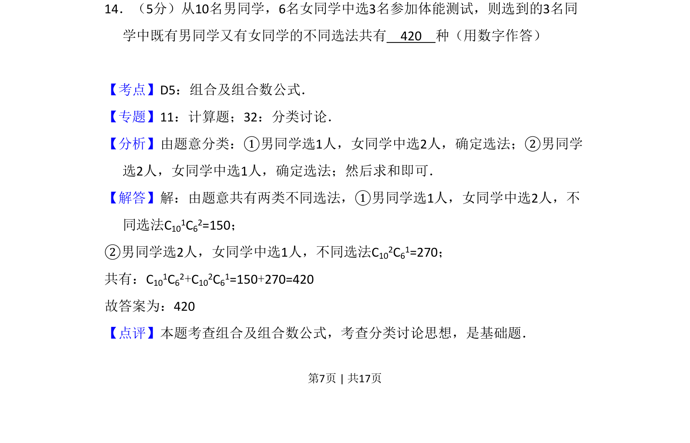
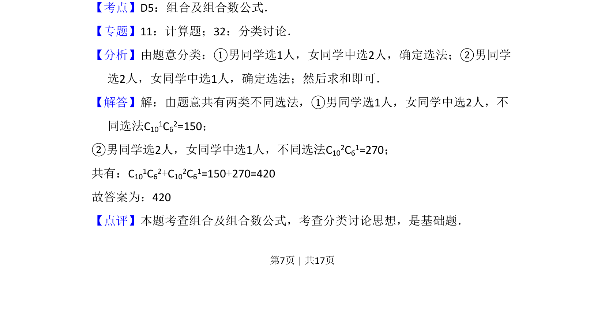

2008-文-14
考点：排列组合 组合数 计数原理
题面

摘要
从10名男生6名女生中选3人参加体能测试，要求既有男又有女，用分类加法计算组合数。
关联考点
答案与解析


📄 原 PDF 第 7 页：
素材/真题/吉林/2008-2024·（吉林）数学高考真题/2008年高考数学试卷（文）（全国卷Ⅱ）（解析卷）.pdf
题干文本
14．（5分）从10名男同学，6名女同学中选3名参加体能测试，则选到的3名同 学中既有男同学又有女同学的不同选法共有 420 种（用数字作答）
解析文本
【考点】D5：组合及组合数公式．菁优网版权所有 【专题】11：计算题；32：分类讨论． 【分析】由题意分类：①男同学选1人，女同学中选2人，确定选法；②男同学 选2人，女同学中选1人，确定选法；然后求和即可． 【解答】解：由题意共有两类不同选法，①男同学选1人，女同学中选2人，不 同选法C101C62=150； ②男同学选2人，女同学中选1人，不同选法C102C61=270； 共有：C101C62+C102C61=150+270=420 故答案为：420 【点评】本题考查组合及组合数公式，考查分类讨论思想，是基础题．